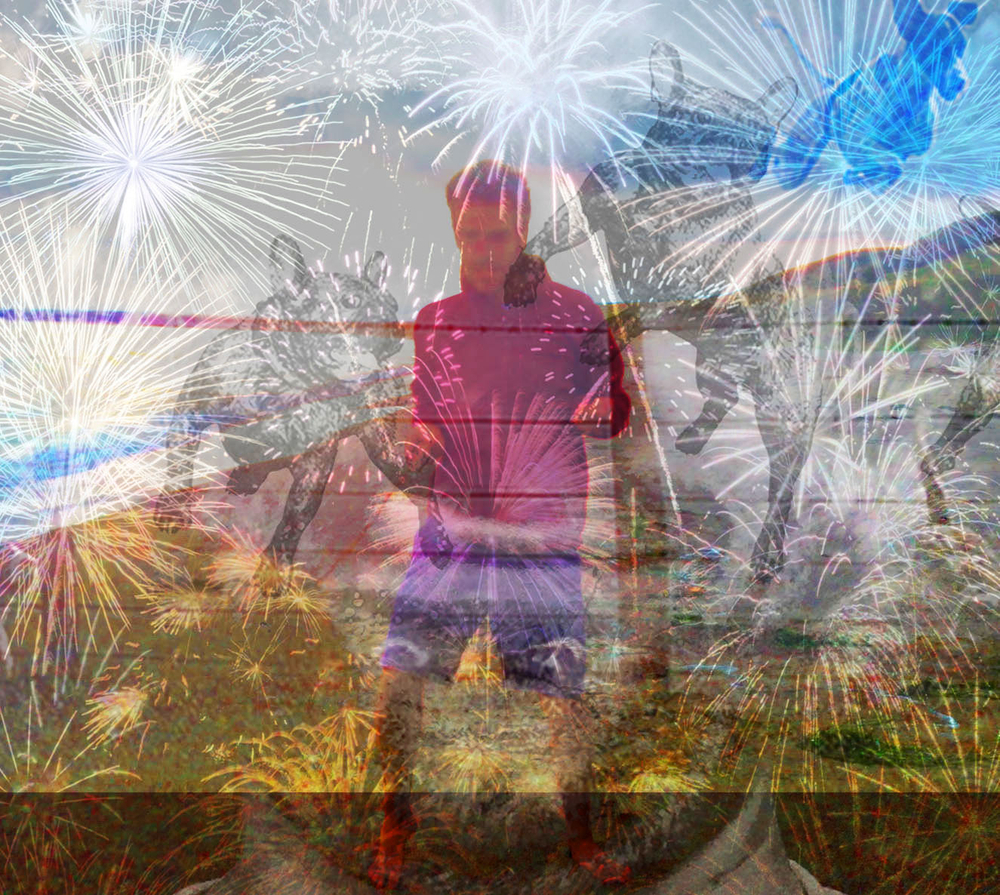

About Cary Euwer
DESIGN + EDUCATION
For me, design and education are synonymous. Both good design and good education facilitate communication, self-discovery, self-expression, and mental and physical health, provide myriad connections, and, driven by a need for clarity, eliminate unnecessary cognitive load to allow one to focus only on what’s important.
I’ve become dedicated to education in the past 5 years. It started with, and continues to be fueled by, a deep frustration toward the lack of integrated experiential, individualized, kinesthetic and visual learning in US school system. My interests are broader than education (I became interested based on my concern for the environment), but I see education as the foundation upon which most societal problems will either worsen or improve. Countless people’s potential is being squandered in the industrial model of education, to the detriment of their own well-being, as well as that of societies and the natural world.
While I’ve made my living from graphic design for the past few years, I have worked on and off and part-time with educational organizations with experiential learning emphases. My work has been largely K-12, including: my current Practice-Based Studio with the Baltimore Campaign for Early Childhood Reading and my work at my current job at Outward Bound here in Baltimore, as well as with DC’s OSSE School Garden Specialist, with the Arcadia Center for Sustainable Food and Agriculture, with Living Classrooms, and a class I taught at Compton Drew Middle School in St. Louis. I’ve also worked with adults, including Outward Bound team- building with the National Wildlife Foundation’s Ranger Rick program, with the Baltimore Police Department which paired inner city boys with Cadets, and within a North St. Louis neighborhood called College Hill where I worked on the development of a community vegetable garden and accompanying design solutions as part of a transitional housing project.
SOCIAL DESIGN INTERESTS:
My main influences are probably the [Montessori pedagogical method](http://en.wikipedia.org/wiki/Montessori_education) and the [Outward Bound School](outwardbound.com). More specifically in the social design field, my main influence has been the [Center for Urban Pedagogy](http://welcometocup.org) (though I believe their efforts could be more comprehensive and larger scale). The following are my (very) broad, potential areas of focus this coming year.
-
K–12 Education
1.A. Explore further opportunities through the Baltimore Campaign for Early Childhood Reading, Outward Bound, Living Classrooms (Tyrone Sherrod), Sam Chaltain, and the Instructional Technology Department at The Community College of Baltimore County (Senior Director Lisa Capan).
1.B. A toolkit for children with ADHD. I was diagnosed at 5 years old, and have strong empathy and interest in strategies for ADHD children. This project could take the form of products (including visual aide resources, time management guides, etc), or ELO (Extended Learning Opportunities), school, parent or community outreach programs.
-
Civic Education
2.A. A Baltimore City initiative to implement CUP (Center for Urban Pedagogy )-influenced visual aide systems in Baltimore City oriented toward reducing the “cognitive burden of poverty”.
2.B. City-wide infographics (graffiti or sanctioned avenues) on poverty, education and the environment.
-
Development / Urban Planning
3.A. Leverage my contacts at Metropolitan, Halle Companies, etc.